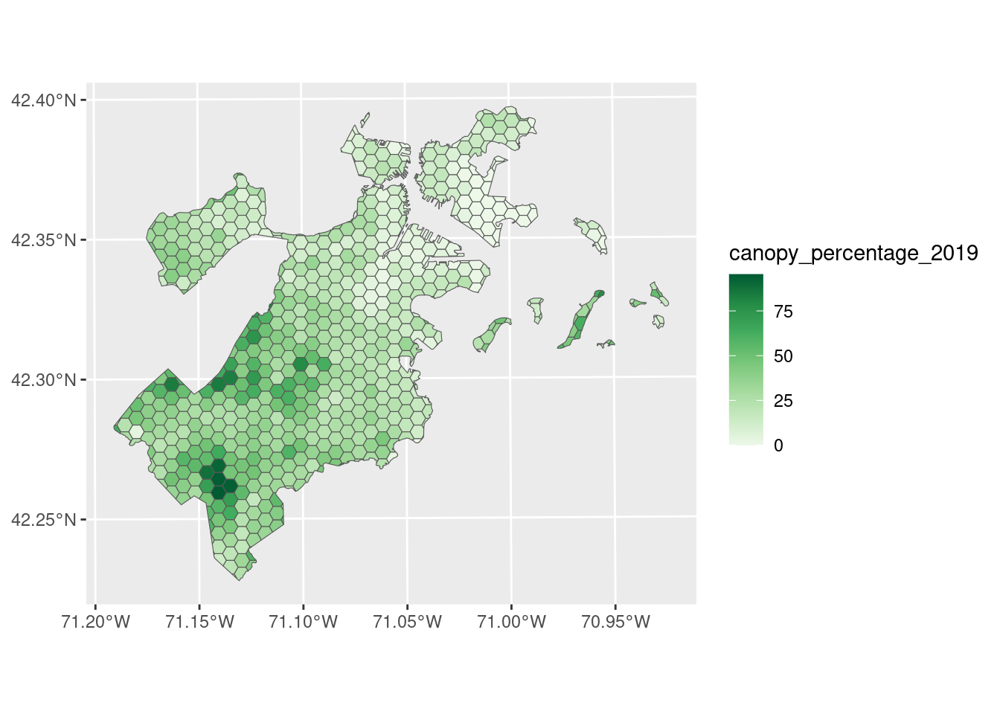

One of the big themes of version 2.0 is operationalization. We’re working to automate as much of our modeling and mapping pipelines as possible, to streamline generating annual maps as time goes on and to make it easier to experiment with new models and data sources in the future. In practice, this means I’ve been spending a lot of time merging individual scripts into targets pipelines, and generally looking at ways to streamline our processes.
The biggest change to come from this rewriting is that, while version 1.0 of our modeling pipeline used an internal library for tuning and creating stacked ensembles, version 2.0 shifts these tasks over to the tidymodels framework.1 Where we had previously only been using the rsample and yardstick packages from tidymodels, we’ve now adopted the framework more-or-less wholesale in order to take advantage of a few advanced features.2
In this post, I want to walk through what that workflow looks like for us – how we get from our field measurements to prepped data for models, then through hyperparameter tuning, into our final ensemble model construction. And then I want to talk about a few rough edges we ran into through the process, and why we’re still using tidymodels despite those stubbed toes.
So, without further ado, let’s start walking through how we’re building our ensemble models using tidymodels.
Building ensemble models using tidymodels
What are we doing here?
My intent with this section is to give a pretty straightforward, if fast-paced, walkthrough of how we’re using tidymodels to build our ensemble models. In order to do that, I need to load quite a few packages:3
# Used to download our predictor datalibrary(rsi)# Contains our "field data", used for cross-validationlibrary(spatialsample)# Used to wrangle our predictor datalibrary(sf)
Linking to GEOS 3.12.1, GDAL 3.8.4, PROJ 9.3.1; sf_use_s2() is TRUE
library(terra)
terra 1.7.71
library(exactextractr)# Tidymodels libraries used to actually fit and tune modelslibrary(tidymodels)
In order to fit a stacked ensemble model, we first need to fit a number of “component” models. For our purposes today, we’ll fit a MARS model using the earth package and a gradient boosting model using LightGBM. While we don’t need functions from these packages, we do need them to be installed so that tidymodels packages can find them:
We also need some data worth modeling. While the actual field data we use for our models is non-public,4 we can demonstrate the workflow using pretty much any example data. For our purposes, we’ll build our models to predict the amount of tree canopy in Boston in 2019, using data shipped with the spatialsample package:
library(ggplot2)ggplot(spatialsample::boston_canopy, aes(fill = canopy_percentage_2019)) +geom_sf() +scale_fill_distiller(palette ="Greens", direction =1)

This will be our outcome variable for our models.
Data preprocessing
In order to actually fit the models, we’re going to need predictor data too! We’ll derive our predictors from Landsat imagery taken in the summer of 2019, when all the trees in Boston were at their greenest.
To actually download this data, we’ll use the rsi package. In order to make the download go faster, we’ll first use future to register a parallel backend, letting us download multiple pieces of data at the same time:
library(future)plan("multisession")
And we can then actually download our Landsat imagery using rsi::get_landsat_imagery():
This winds up generating a median-composite image, made up of all of the “good” data available for this time period.
We normally don’t fit our models using these raw reflectance values, but rather use them to calculate a number of spectral indices that we then use as predictors. We can automate this process using rsi as well; for instance, we can use this code to calculate every spectral index possible using the bands in the raster we downloaded:
Now we’ve got a raster with a ton of spectral indices that we can use as predictors. We now need to associate those with our canopy percentage measurements from spatialsample. Generally we accomplish this using exactextractr to calculate the mean of all of these indices within our sample locations:
We’ve now got index values at each of our sampled polygons!
Before we can start using these to predict canopy coverage, we need to do a bit more pre-processing. For instance, for some reason a few of our polygons are missing values in at least one spectral index. While in the real world we’d probably want to debug exactly why this is happening, for our purposes today it’s a lot easier to just drop those rows from our data frame:
We’ve now got our cell_values object fully ready for modeling workflows. We’re now able to start the actual model-fitting process.
Our first step is to define the formula we’re using to fit our models. Because I’ve got the cell_values dataframe structured with our outcome column in front, followed by all the predictor columns, I can create this formula using the neat DF2formula() utility:
formula <-DF2formula(sf::st_drop_geometry(cell_values))
Did you know that’s a function in base R? What a wild language.
Anyway, with our formula built, we’re ready to start actually using tidymodels packages. Our first step is to create a recipe that uses our formula, and will pass that information on to the other tidymodels packages:
recipe <- recipes::recipe(formula = formula, data = cell_values)
Up next, we’ll create the model specifications that define what models we want to fit, and pass hardhat::tune() to every hyperparameter that we want to be tuned.5 We’ll also set the “engine” that we want to use (the package for fitting the models), and the mode of model:
We’ve now got our recipe and our model specifications created, meaning we’ve defined all the preprocessing and modeling we’re asking tidymodels to perform.
I’ll talk about this a bit more later, but I think it’s worth noting how complex the thing we just did is. The workflow_set() function just created a “workflowset”, which is a tibble that contains multiple “workflows”6 which each contain our “recipe” and “model specification” which has some arguments “marked for tuning”7. The code we’ve written is pretty minimal – something like 20 lines of code to create the workflowset itself – but it winds up producing quite a number of abstractions that we need to reason around to actually understand what we’re doing.
But with our workflowset created, we’re now able to actually tune our component models! Before we do so, we need to set our future strategy back to sequential processing. The LightGBM implementation in bonsai uses parallel processing by default, and our tuning code will also try and run in parallel if we have a future backend registered, resulting in thread contention and making tuning never finish. As such, we’ll run plan("sequential") before tuning:
plan("sequential")
And then we’ll perform our tuning. We need to tune each row of our workflowset – each unique recipe/model combination – separately.
Luckily, this is pretty easy using workflowsets::workflow_map(), which can apply a function to each workflow separately. Here, we’ll use this to use finetune::tune_race_anova() to evaluate our models against 10 different sets of hyperparameters8 – making a point to save the predictions and workflows from each set, as we’ll need those to build our ensemble model later on.
Our tuning object now contains the outputs from the tuning process. We could use this to, for example, find the best evaluated set of hyperparameters for each of our models:
But we aren’t actually all that interested in just-the-best. Because we’re going to be combining these models into ensembles, we can actually use all the models fit using good enough hyperparameter sets. That process can happen more or less automatically thanks to stacks, which will fit a lasso regression to determine which of the candidate models are better than useless and combine them into a final prediction:
── A stacked ensemble model ─────────────────────────────────────
Out of 8 possible candidate members, the ensemble retained 4.
Penalty: 0.1.
Mixture: 1.
The 4 highest weighted members are:
# A tibble: 4 × 3
member type weight
<chr> <chr> <dbl>
1 recipe_lightgbm_1_09 boost_tree 0.418
2 recipe_mars_1_4 mars 0.315
3 recipe_lightgbm_1_05 boost_tree 0.169
4 recipe_mars_1_6 mars 0.132
Now, the best thing about stacks9 is that predicting with this model is dead simple. Even though predicting with our ensemble requires predicting with each of the selected earth and LightGBM models, and then predicting with the final lasso regression, from our perspective as users we can just call a single, typical predict():
For our carbon mapping workflows, however, we wind up generating predictions using the same 30 meter raster we grabbed our original predictor values from. Ensembles from stacks also work pretty well with this workflow:
We’ve also been using bundle to help us serialize these ensemble models and load them in new R sessions. The flexibility of bundle is another great plus of leaning in with tidymodels.
Some complaints
That said, as I mentioned at the start, I’ve certainly had a few unpleasant experiences through this transition, and I want to talk about them now.
I want to be clear at the start – I’m not intending for this to be some sort of “tidymodels skeptic” post. We’re still using tidymodels, and I think our codebase is more maintainable and – with some caveats – understandable following this ground-up rewrite. These are just the things that bit us during that rewriting process.
Another disclaimer here is that I interned with the tidymodels team back in 202210 and deeply enjoyed my time with the team. As a result, my experience with this rewrite was pretty nonstandard; I was already pretty familiar with some corners of the ecosystem (especially the parts touching rsample), am pretty willing to push past frustration with other packages based on my trust in the people developing them, and could DM a team member if I was ever particularly stuck. So this isn’t the most objective outsider experience you could ever imagine; it’s just the one I had.
Learning one thing requires learning everything
A recurring challenge I have with the tidymodels framework is that often, to understand one part of tidymodels, it can feel like you need to know all of it.
For example: if we want to automatically tune a hyperparameter, we need to set it to tune() inside of our model specification. But what does tune() actually do – how does it determine the hyperparameter values worth searching?
Well, the tune() function itself comes from the hardhat package, which describes itself as a “developer focused package designed to ease the creation of new modeling packages”. That means that if I’m trying to figure out what this tune() function actually does, running ?tune() winds up getting me the help page of a developer-focused package, and I start wondering how much of that developer-focused documentation I need to read and learn in order to tune my models.
For its part, the tune() help page actually points you to tune::tune_grid() and tune::tune_bayes() for more information on how these parameter values are being set. I don’t see any section here that explicitly says how parameter ranges are set when using tune() but the “Parameter Grids” section of tune_grid() and “Parameter Ranges and Values” section of tune_bayes do both discuss tuning parameter ranges. These sections don’t mention tune(),11 but do mention that dials::finalize() “can be used to derive the data-dependent parameters”.
We don’t call dials::finalize() ourselves – we don’t actually load dials at all – but if we go to the dials website, we could read the Getting Started vignette12 which starts to explain how parameter ranges are estimated. The “Unknown Values” section sort of explains how some ranges – like the max value for mtry and so on – are calculated, but I’m still a bit lost on how our hardhat::tune() gets turned into a dials function (if it does) and when these parameter ranges are set.
So I haven’t entirely figured out how these grids are made, but I do have five tabs open from three different package websites. At this point, I’m starting to get a little bit buried by the different layers going on here – and I don’t know how much of hardhat, dials, or tune I need to understand before things start making a bit more sense. I also don’t have an obvious first point of attack to answer this question, as the packages all link back to each other as places to get further information.13
A bit of speculation: I think the issue I run into here is that the boundaries between the packages – where the logical breaks between concepts are for developers – don’t line up with where the logical breaks between concepts are for me, as a user. There’s no one package that owns the concept of “tuning a hyperparameter” – tune owns the grid searching, hardhat owns the infrastructure, dials owns the grid construction. As a result, each package’s documentation explains the piece of tuning that package covers, but none of them explain the concept as a whole.
Hidden options can cause delayed failures
This particular issue is more likely my fault – the behavior I’m about to complain about is documented, and is a valid design for an interface to have, but I got badly bitten by it and want to whinge.
The default arguments to tuning functions – specifically, those in control_grid() – are set (I think) to create small, efficient objects. This is a sensible goal to have. The problem is that it also makes these objects less useful, in a way that you can’t fix after the fact. You’ll only learn that your pipeline is broken after already spending a lot of time running computationally intensive tuning code.
To be more specific: say that you tried to tune the same workflow that we used above, but didn’t know that you needed to specify that you wanted to save the workflow:
Error in FUN(X[[i]], ...) :
✖ The control option `save_workflow = TRUE` should be used when tuning.
We get an error. Now, if we had read the documentation for fit_best(), we’d see that the documentation for the x argument ends by saying “The control option save_workflow = TRUE should have been used” – so this is documented. But if you missed that, or if you’re writing your pipeline as you go,14 you’re just told – in past tense – that you did the wrong thing and need to try again, throwing out the computational time you spent tuning the first time around.15
Now, the version of this that actually bit me came when I tried to add my tuned models to an ensemble using add_candidate(). This function has a similar pattern to fit_best(), except it wants you to have saved both your workflow and your predictions:
Error in .f(out, .x[[x_i]], .y[[y_i]], ...) :
The inputted `candidates` argument was not generated with the
appropriate control settings. Please see `control_stack()`
(`?stacks::control_stack()`).
And again, this is documented, for instance in the “define candidate ensemble members” section of one vignette16 and in one of the argument definitions for add_candidates(). But I didn’t see it when I skimmed the stacks documentation initially, and as a result I wound up wasting about ~26 hours spent tuning without saving workflows or predictions. The defaults here are good for making your objects smaller, but mean that tidymodels workflows fail extremely slowly.
Part of the issue with this particular example is that the way these options get set is pretty indirect, and I get a bit lost in the documentation. My tuning here is controlled by workflowsets::workflow_map(), which has five documented arguments: the workflow set, the tuning function to run, a flag for verbosity and a random seed, and then ..., documented as “Options to pass to the modeling function”. The word “control” doesn’t appear on this page.
A minor nit is that I don’t think of tune_* as being modeling functions, but rather tuning functions, so ... doesn’t jump out at me as a place to set my save_pred and save_workflow arguments. But I think a bigger problem I had is that if I do click over into the documentation for my tuning function, in this case finetune::tune_race_anova, I still don’t see obvious places to set these arguments.
Instead, the tune_* functions have a control argument which itself takes the output of another function. There are a surprising number of these control functions – at least control_race() and control_sim_anneal() from finetune, plus control_bayes() and control_grid() from tune17 – which I think are paired 1:1 with tuning functions.
I’ll be honest, I don’t actually know what these functions do at a fundamental level,18 or if they’re sharing some plumbing under the hood which makes this indirection much more efficient for the developers. All I know is that I need to go through a decent number of man pages and a bit of guesswork to land on this final chunk of code:
So, in order to override the default arguments so that I can fit my models or create an ensemble after tuning, I need to pass the new values to control_race(), and then pass the output from control_race() to tune_race_anova by providing it as a named argument metrics to .... That’s a lot of deep magic to learn – and a lot of concepts to be thinking about at the same time in order to use this function.
In some sense, this is another flavor of “learning one thing requires learning everything”. Because a lot of functions that you’d use later in a workflow require specific non-default arguments in earlier steps, you need to know every function you intend on using when you start writing a pipeline. And as understanding the arguments to these functions generally requires understanding multiple other functions in multiple other packages, it becomes difficult to learn the framework as you go, or to think about modeling pipelines in smaller chunks.
We’re still using tidymodels
With those complaints now vented, I wanted to close by saying that the pipeline I was building – the one that originally motivated this post – is still using tidymodels, and is going to keep using the framework for the forseeable future. There’s a few really nice features of the framework that motivated the switch:
First, finetune is really cool. We’ve been using finetune to conduct a much more thorough grid search than would be possible if we needed to see every set of hyperparameters through to the end, and to do so faster than we could do the smaller searches we had been using.
Second, stacks is also great. A generic interface to fit ensemble models (something I’ve written about before), which easily accepts new models and writes its own predict methods? Sign me up. Wanting to use these two packages then motivated us to use tune, and deal with the pain points I mentioned above.19
Third, even before we adopted the full tidymodels framework, we were already using packages like rsample and yardstick (not to mention my extensions for these packages, spatialsample and waywiser20) to assess our models. We’ve always found a number of individual tidymodels packages to be extremely useful; most of our pain points (and most of the complaints above) come when we need to hand things off between two packages.
And finally, I do think our final pipeline here is more readable, and will likely be more maintainable moving forward. Only time will tell, of course, but I’d rather be reading code that included a lot of tune_race_anova() and boost_tree() than the model-specific interfaces and nested lapply() calls that it replaced.
So given all that, we’re still using the tidymodels framework. By my estimation, the benefits have been worth the growing pains so far, and with our modeling pipelines now operational we’re hoping that we’re mostly finished with the worst of the surprises. We’re just making extra sure to highlight the bandaids we’ve had to add to the pipeline, wherever we got caught on a rough edge – and hopefully this post helps flag a few of them for you as well!
Footnotes
A slightly less relevant change is that I wrote most of the pipeline while beta testing Posit’s new Positron IDE, which I mention mostly as a humblebrag. I generally really like Positron – this post was written using it – though I have a really hard time specifying why. It just feels nice to use.↩︎
By the way – if you work on a package I mention in this post, and it would be useful for you to say “Used in New York State’s Forest Carbon Assessment” somewhere, drop me a line. We’re part of New York’s Climate Act Scoping Plan and partner with the state DEC on our mapping, and your work is helping make that possible.↩︎
I’m throwing this in a footnote because it doesn’t really fit anywhere else: There’s a trendy sort of post where people talk about how the tidyverse or tidymodels ecosystem being made up of many packages is itself inherently bad. I think this is a bad opinion. We’re asking these ecosystems to do a lot of complicated things for us, which typically means we’re asking them to include a lot of functions and code. It’s natural – and good practice – for these functions to get broken up into logical units, each providing an interface for users and the rest of the ecosystem to build upon. As such, I think that measuring supply-chain risk based on a pure count of dependencies is the wrong approach. If you’re worried about dependencies changing their interfaces or getting archived and breaking your workflows, I personally think you should be more concerned about multitool-packages developed by non-tenured academics than about the ecosystem maintained by a small team of professional software engineers.↩︎
I’m realizing now, four-ish years into this job, that I don’t actually know the right phrasing for FIA data. It’s not “confidential”, as no one in our group has a security clearance, but we have access to plot locations under an MOU with the Forest Service. I guess “non-public” is the best I’ve got at the moment.↩︎
There’s a note in the tune documentation that some models – specifically earth models, but presumbably LightGBM could do the same thing – can evalute more models than are fit, speeding up tuning times. I don’t actually see any information on how to combine this trick with tune itself, though, so we’re just going to pretend I didn’t see that part of the docs.↩︎
Which come from a package, workflows, that we won’t ever call explicitly here.↩︎
With parameter values determined by the dials package which, again, we won’t call explicitly here↩︎
Which is a small number chosen to run quickly for this blog post; in practice we tune with a much, much larger grid.↩︎
In the context of grid creation – tune_grid() mentions tune() in the context of user-provided grids.↩︎
Not linked from the finalize() page, but in the top navigation bar.↩︎
For what it’s worth, a full explanation of how tuning works is in the tidymodels book, but I didn’t see that linked anywhere in this chain.↩︎
Meaning you didn’t look up the code you needed post-tuning until you were done tuning.↩︎
If you’re tuning a workflow, I think there is a workaround where you can use select_best(), finalize_workflow(), fit(), and extract_workflow() to get your fitted workflow without needing to retune everything here. I’m not entirely sure– I’m guessing based off of the “Details” and “See also” sections of the fit_best() documentation, and this doesn’t seem to work with workflowsets.↩︎
Though isn’t spelled out in either other vignette, or the README↩︎
I think it’s most fair to not include control_resamples() or control_last_fit() here, because I think they’re not used for tuning, but I don’t actually know. A particular oddity is that control_grid() is listed in the tune reference as a developer function, but is used throughout the documentation, while control_last_fit() is listed as a “function for tuning” and isn’t used in any examples.↩︎
Creating a list with a finite set of named elements, with some default values? The print method just says <x> control object.↩︎
We had been hand-rolling our own ensemble code, which was mostly painless. The hardest part initially was writing a predict method that would generate predictions from all of our component models, and then combine those into a final ensemble prediction. The function we wrote to handle this could easily extend to use multiple models from the same package – if we wanted to use add another LightGBM to the mix, for instance – but adding new packages required adding new complicated chunks to the predict method. We were interested in making future extensions easier, so stacks seemed like an obvious choice – but our home-rolled grid search code was a lot more straightforward than tune, so we were initially resistant to making the jump.↩︎
The waywiser package was originally developed explicitly for the NYS carbon mapping project, as it happens; we use just about every function in waywiser as part of our assessment process.↩︎